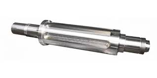
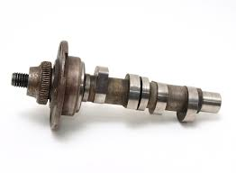
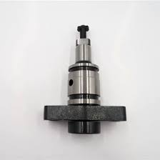
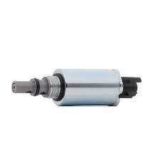
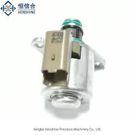
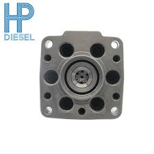
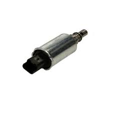
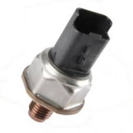

Principaux Composants
Corps de pompe
- Structure principale contenant les éléments internes.
- Acier renforcé pour résister aux hautes pressions.

Arbre d'entraînement
- Relié à l’arbre à cames ou au vilebrequin (par courroie/chaîne).
- Transforme le mouvement rotatif en compression
Cames ou excentrique
- Actionne les pistons pour générer la pression.


Pistons (Plongeurs)
- 1 à 4 selon le type de pompe (axiale, radiale, rotative).
- Compressent le carburant à haute pression.
- Acier traité pour résister à l’usure.
Cylindres (Barillets)
- Logement des pistons, usiné avec précision pour éviter les fuites.


Soupapes de Régulation
- Permet l’entrée du carburant basse pression dans la chambre de compression. -> soupape d'admission
- Libère le carburant comprimé vers le rail ou les injecteurs. -> soupape de refoulement
Rotor distributeur (pompes rotatives)
- Dirige le carburant vers les injecteurs dans le bon ordre.


Tête de distribution
- Assure l’étanchéité et la synchronisation.
Vanne de régulation électromagnétique
- Contrôlée par l’ECU pour ajuster la pression en temps réel.


Capteurs et Électronique
- Mesure la pression et envoie les données à l’ECU. (capteur de pression rail )
- Évite la surchauffe. ( capteur de suchauffe )